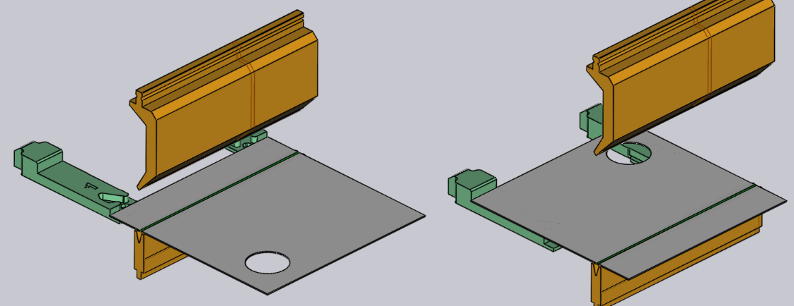

Editar uma dobra
As configurações básicas de uma dobra podem ser visualizadas e editadas usando o painel de dobra. Para abrir o painel de dobra para uma dobra específica:
-
Clique em uma dobra no navegador de dobras para selecionar a dobra.
-
Clique novamente na mesma dobra para abrir o painel de dobra para editar essa dobra.
Um método alternativo:
-
Ctrl+Clique em uma dobra no navegador de dobras, para selecionar a dobra e para abrir o painel de edição dessa dobra.
O painel de Dobra
O painel de dobra se parece com a imagem ao lado. Ele tem algumas configurações e operações para trabalhar na dobra.
-
A entrada Posição é usada para mover a dobra ao longo da máquina. O valor exibido aqui é a posição da extremidade esquerda da dobra na escala da máquina. (Você também pode arrastar a dobra para definir interativamente a posição, veja a seção abaixo).
-
As listas Estação e Fixação são usadas para mover esta operação de dobra para uma configuração diferente, [1] ou para uma estação station[2] dentro desta configuração. Essas opções aparecem apenas se a peça tiver várias configurações, ou se a configuração tiver várias estações, respectivamente. (Você também pode mover uma dobra para uma estação diferente clicando na peça de trabalho e arrastando-a até que esteja alinhado com uma estação diferente).
-
O botão Girar a peça de dobra é usado para inverter a peça (inserí-la com o outro lado na máquina). A imagem abaixo mostra o efeito de clicar neste botão (clicar neste botão novamente restaurará a orientação original):
 -
O botão Separar aparece quando você está editando uma dobra de extensão múltipla (uma dobra feita de dois ou mais vãos de dobra colineares). Se a dobra agrupada puder ser desagrupada e processada como dobras separadas, este botão pode ser usado para quebrar esta operação de dobra em duas separadas. A imagem abaixo mostra como a dobra 1 (exibida como 1a e 1b no modo de sequenciamento) se divide em dobra 1 e 2 após o desagrupamento:

-
O link Medição do ângulo é usado para exibir o painel de medição de ângulo para esta dobra. Este botão só é visível se um ou mais métodos de medição de ângulo estão disponíveis para a máquina selecionada.
-
O botão Saltar a dobra é usado para dizer para o TecZone Bend não processar essa dobra em particular. Isso é útil para marcar algumas dobras como sendo processadas com uma tecnologia diferente da prensa-dobradeira (por exemplo, uma prensa puncionadeira ou uma máquina de dobra oscilante).[3]
-
Ligue a caixa de seleção Dobra de marcação para dizer ao TecZone Bend para usar uma operação de cunhagem. Isso é ativado apenas se uma cunhagem for possível (normalmente, isso significa que há um punção e matriz com capacidade de cunhagem que podem ser usados). A cunhagem requer mais força da prensa, mas pode resultar em um raio de dobra mais apertado do que uma dobra ao ar. Dobra com estampa na matriz também requer que você tenha um punção e uma matriz com o ângulo exato que é necessário para esta operação de dobra.
-
Ative a opção Pré-dobra de dividir esta dobra em duas operações — uma pré-dobra e a dobra de final. Por padrão, TecZone Bend moverá a dobra final para uma posição que é logo após a próxima dobra na sequência. Consulte a seção abaixo para saber mais sobre como usar uma pré-dobra.[4]
-
Use os botões Continuar e Voltar e para percorrer a edição das diferentes dobras na peça.
Operações avançadas
Aqui estão algumas operações mais avançadas que você pode fazer com uma dobra.
Usando uma pré-dobra
Alguns tipos de colisões podem ser evitados dividindo uma operação de dobra em uma pré-dobra e uma dobra final. Aqui está um exemplo simples:

A peça acima tem duas dobras e, na segunda dobra, a peça colide com o trilho da matriz. Isso não pode ser corrigido alterando a sequência. Uma solução possível é introduzir uma pré-dobra na dobra 1, escolhendo dobra 1 e ativando a caixa de seleção Pré-dobra.

Como visto na imagem, isso divide a dobra 1 em uma pré-dobra e uma dobra final (que agora se torna a dobra 3). Os ícones no navegador de dobras agora indicam que a dobra 1 é uma pré-dobra, enquanto a dobra 3 é uma dobra final. Você pode usar caixa de entrada caixa de entrada Ângulo de pré-dobra para ajustar o ângulo da pré-dobra. Neste exemplo, o ângulo é definido como 120, de modo que a peça é dobrada do estado plano (ângulo interno de 180) para 120 graus no primeiro estágio, e depois a 90 graus no segundo estágio. Assim, durante o processamento da dobra 2, o primeiro flange não está totalmente dobrado e, portanto, evita uma colisão com o trilho da matriz (as imagens abaixo mostram a situação quando as dobras 2 e 3 estão sendo processadas):

Edição de múltiplas dobras
É possível editar várias dobras ao mesmo tempo. Para fazer isso:
-
Clique em uma dobra no navegador de dobras para selecioná-la.
-
Mantenha pressionada Shift e selecione dobras adicionais para editá-las todas juntas.

Um painel de edição como o ao lado é exibido. Algumas operações de edição que podem ser feitas juntas em todas as dobras são exibidas aqui. Além disso, esse painel pode exibir alguns botões adicionais:
-
O botão Agrupar é exibido se você selecionar duas ou mais dobras que são colineares e podem ser agrupadas em uma única operação de dobra de vários vãos.
-
O botão Substituir as dobras. é exibido quando você seleciona exatamente duas dobras, e permite que as duas dobras sejam trocadas na sequência (isso é exibido apenas se as duas dobras podem ser trocadas na sequência).
-
Se as duas dobras forem paralelas, em direções opostas e estiverem a uma curta distância entre si, pode ser possível combiná-las em uma única dobra Z. Neste caso, é exibido o botão Dobra Z.[5]
Arrastando uma dobra
A caixa de entrada Posição pode ser usada para posicionar uma dobra com precisão. Muitas vezes, é mais fácil apenas arrastar uma dobra para a posição desejada. Para fazer isso:
-
Certifique-se de que o painel de edição de dobras esteja aberto (clicando duas vezes no número da dobra).
-
Clique na peça perto da linha de dobra e comece a arrastar a peça para a esquerda/direita.
Dependendo de onde você segura a peça (perto do centro da linha de dobra, ou perto das bordas esquerda/direita), TecZone Bend gerará linhas de encaixe automáticas que ajudarão você a posicionar a dobra precisamente em relação a uma estação de ferramenta. A imagem abaixo mostra uma dobra sendo arrastada segurando-a perto do centro, ou segurando-a perto da borda esquerda.

As linhas de encaixe nas figuras acima mostram a dobra sendo posicionada exatamente no centro da estação de ferramentas, ou com a borda esquerda alinhada exatamente com o punção e a matriz.